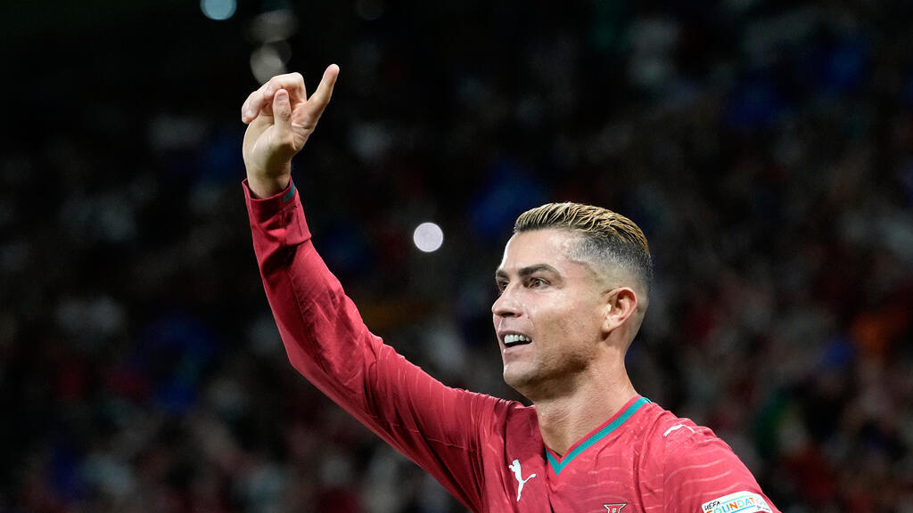
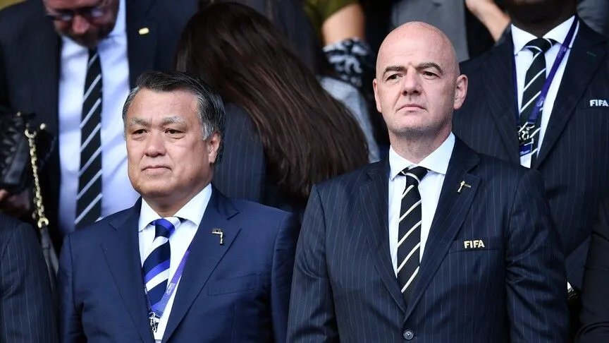

Cristiano Ronaldo announces retirement from international football
The 41-year-old Portuguese legend says he will 'hand back the number 7 shirt' in social media post.

The 41-year-old Portuguese legend says he will 'hand back the number 7 shirt' in social media post.

Canada's secretary of state for sport dismissed concerns Wednesday that barring Russian players from next month's world junior hockey championship in Alberta could hurt the country's chances of hosting future international events, including the Olympics.

Tashima says he brings ‘honest, sound, upright attitude’ He is understood to have acted with the blessing of Uefa The Japan Football Association’s honorary president, Kozo Tashima, has announced his intention to stand against Gianni Infantino in March’s Fifa presidential electio

Japan's Kozo Tashima has announced his candidacy for Fifa's upcoming presidential election.

Cristiano Ronaldo announced Thursday that he is retiring from international football at the age of 41, bringing to an end a record-breaking 23-year career with Portugal. The five-time Ballon d'Or winner made 234 appearances for his country, scoring 146 goals. His retirement from
Max Rushden is joined by Barry Glendenning , Lars Sivertsen and Jonathan Liew as Liverpool lose for the first time in the Champions League this season and Manchester City and Arsenal escape with narrow wins Rate, review, share on Apple Podcasts and join the conversation on email
It's the last international break of the year and England have some big games in the Nations League coming up. Thomas Tuchel has big decisions to make on his next squad selection.

Looking for something specific? Search every story.